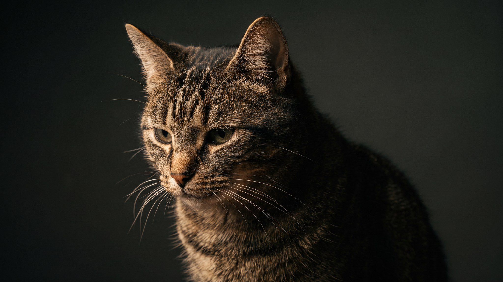

Кошка чихнула раз, вы не обратили внимания. Чихнула снова вечером, стало интересно. Чихает третий день подряд с прозрачными выделениями из носа, и вот уже хочется понять, что происходит. Чихание у кошек бывает абсолютно нормальным, а бывает сигналом, который не стоит игнорировать. Ниже: на что смотреть и когда пора к ветеринару.
🐾 Не уверены, что с кошкой всё в порядке?
Опишите симптом в AnimaLife или пришлите фото — AI-ветеринар за минуту скажет, можно ли наблюдать дома или ехать к врачу сегодня. Бесплатно, круглосуточно, без записи.
Проверить симптом → Проверить в MAX →
У вас iPhone? AnimaLife есть в App Store
Кошки чихают по тем же бытовым причинам, что и люди. Пыль на полке, новый наполнитель для лотка с мелкой фракцией, запах духов или освежителя воздуха, перец с разделочной доски, сухой воздух при работающем отоплении: всё это может вызвать одиночное или двойное чихание без каких-либо последствий.
Норма выглядит так: 1-3 чихания в день, кошка активна, ест, пьёт, глаза чистые. Больше ничего не происходит.
Прежде чем решить, везти или нет, понаблюдайте 2-3 дня и отметьте:
Часть причин лежит прямо в квартире, и убрать их несложно:
Уберите один-два раздражителя и понаблюдайте несколько дней. Если чихание прошло, скорее всего, причину вы нашли.
Сигналы, при которых откладывать визит не стоит:
Что подготовить к приёму: видео приступа чихания (снять на телефон несложно, врачу это помогает), дату, когда началось, и перечень изменений в доме за последние 2-3 недели: новый наполнитель, корм, растение, ремонт, появление нового животного. Причину чихания устанавливает врач после осмотра.
🐾 Проверьте свою кошку, пока помните
Откройте AnimaLife, опишите, что беспокоит, — получите разбор и понятный план действий. Ответ за минуту, бесплатно и без очередей.
Спросить AI-ветеринара → Спросить в MAX →
У вас iPhone? AnimaLife есть в App Store
🐾 Понравился разбор?
Подпишитесь на канал — каждый день разбираем по одному тревожному симптому у кошек и собак: что в пределах нормы, а когда пора к врачу. Подпишитесь, чтобы не пропустить разбор, который может спасти здоровье вашего питомца.
Материал носит информационный характер и не заменяет очную консультацию ветеринара. При сомнениях обратитесь к специалисту.